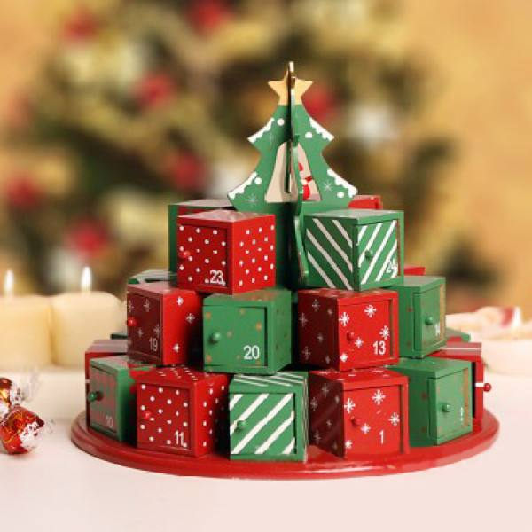

<头>
<标题>李文龙 <元名称="描述"内容=""> <元名称="关键字"内容=""> <元名称="作者"内容="按 dede58.com 排序">
<元名称="视口"内容="宽度=设备宽度，初始比例=1.0，最大比例=1.0，用户可扩展=否">
<链接href="static/css/swiper-3.3.1.min.css" rel="样式表">
<链接href="static/css/style.css" rel="样式表"> <正文数据间谍="滚动">
<表单名称="表单搜索"> <输入类型="隐藏"名称="kwtype"值="0"> <输入类型="文本" class="txt1"名称="q"值="请输入关键字"> <输入类型="提交"类="btn1"值="">
网站首页
关于我
实验
实验一
实验二
实验三
实验四
实验五
实验六
实验七
< a href="liwenlong/a/lianxiwo/Index.html "class="ce">联系我
<表单名称="表单搜索"> <输入类型="隐藏"名称="kwtype"值="0"> <输入类="txt1" type="text" name="q" placeholder="请输入关键字"> <输入类="btn1"类型="提交"值="">
首页
关于我
实验
实验一
实验二
实验三
实验四
实验五
实验六
实验七
联系我
/ 分部>
<类="图片">
<类="图片">
<类="图片">
实验
<强>实验
<一个href="liwenlong/a/shiyan/shiyanyi/Index.html">
实验一
石盐一
<一个href="liwenlong/a/shiyan/shiyaner/Index.html">
实验二
Shiyaner
<一个href="liwenlong/a/shiyan/shiyansan/Index.html">
实验三
十岩山
<一个href="liwenlong/a/shiyan/shiyansi/Index.html">
实验四
shiyansi
实验五
shiyanwu
实验六
石盐流
查看更多
关于我
关于我
随手一拍
水书屋
<乌尔>
查看实验
查看实验
联系我
Lianxiwo

友情链接：
版权和副本;2021 华东交通大学李文龙